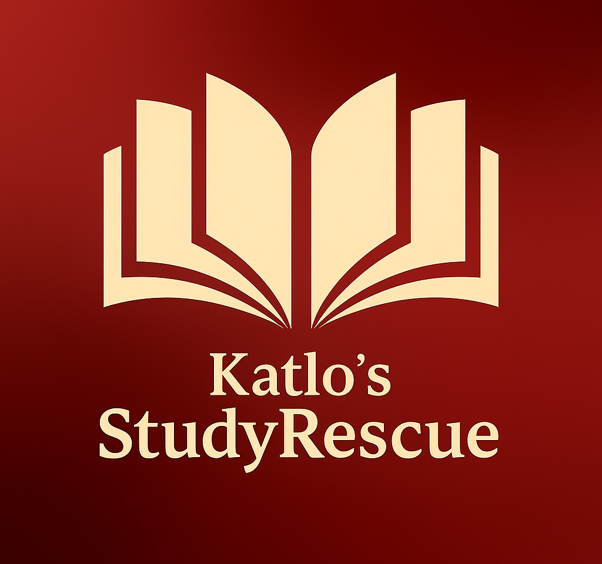

Katlos's StudyRescue
Why choose Katlo's StudyRescue?

Empowering Students to Learn, Grow, and Succeed
Katlo's StudyRescue is a tutoring institution that helps students achieve their academic goals. With access to text books,past papers, and study tips provided and couselling classes, one may find an appropriate method to use. At Katlo's StudyRescue, we provide high-quality tutoring that builds confidence, strengthen understanding, and helps learners achieve their academic goals.
Education That Makes a Difference
We believe education should be accessible, effective, and inspiring. Our teaching approach encourages critical thinking, discipline, a love for learning and skills that last far beyond the classroom. We have Qualified and Passionate Tutors, Personalized Learning Plans, Supportive and Encouraging Environment, Focus on Understanding, Not Memorization, and Proven Academic Improvement

Katlo's StudyRescue is a dedicated tutoring institution committed to academic excellence. We support students at every stage of their learning journey with personalized lessons, experienced tutors, and proven teaching methods. Whether your goal is to improve grades, prepare for exams, or build strong academic foundations, we tailor our approach to suit each learner's needs.
We offer One-on-One and Small Group Tutoring, Primary, Secondary, and Advanced Level Support, Exam Preparation and Study Skills Coaching, In-Person and Online Learning Options, Our programs are designed to be engaging, supportive, and results-driven. We work with; Primary school learners, High school students, Exam candidates, or Lifelong learners seeking academic growth. No matter the level, we meet learners where they are and help them move forward with confidence.